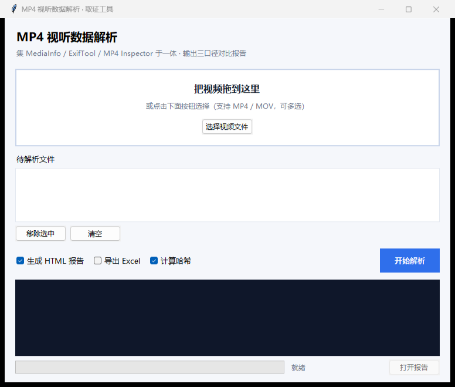
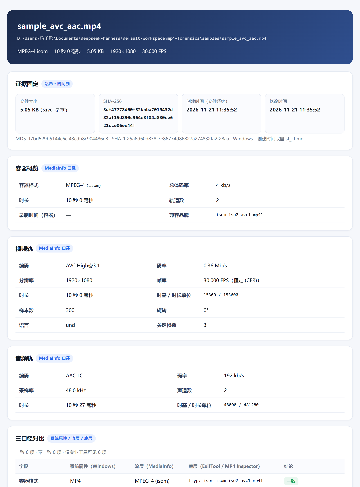

把视频拖进去，一次解析同时给出四类软件的元数据，并生成「三口径对比报告」——自动标注哪些一致、哪些不一致、哪些只有专业工具看得到。
同一份视频，四个软件给出四套数字。做检验时最麻烦的不是读不到，而是不知道该信哪个。
| 原来用什么 | 能读到什么 | 局限 |
|---|---|---|
| Windows 属性 | 时长、分辨率、帧率、采样率、大小 | 取整丢精度 |
| MediaInfo | 容器、编码、码率、帧率、声道 | 看不到底层 box |
| ExifTool | 文件时间戳、容器时间、TimeScale | 字段海量难查 |
| MP4 Inspector | box 树、mdhd 原始值、十六进制 | 4K 大文件溢出崩溃 |
系统属性、流层参数、底层 box、时间戳，全部来自同一次读取，数值可直接互相验算。
自动判定「一致 / 不一致 / 仅专业工具可见」，把差异和原因写清楚，直接进检验记录。
box size 用 64 位处理，4GB 以上、4K 60fps 大文件不会溢出——这正是 MP4 Inspector 崩掉的地方。
MD5 / SHA1 / SHA-256，加上文件系统时间与容器内录制时间，两者不一致会被标红。
stss 同步样本列表直接列出来，判断剪辑点、I 帧间隔不用再翻十六进制。
全程本地运行，视频不出本机；生成的是自包含 HTML，双击就能看。
左边是软件本体，右边是它生成的报告——哈希、三口径对比、box 树、十六进制都在一份文件里。


不需要装 Python，不需要敲命令。
_internal 要和 exe 放一起。视频名_报告.html。要做批量分析、接进脚本，用 Python 包更顺手。
# 安装
pip install -e .
# 看全部元数据
mp4-forensics info 视频.mp4
# 生成报告 + mdhd 十六进制
mp4-forensics info 视频.mp4 --html 报告.html --hex moov/trak/mdia/mdhd
# 替代 MP4 Inspector
mp4-forensics tree 视频.mp4 --depth 6
mp4-forensics hex 视频.mp4 --box moov/trak/mdia/mdhd
# 三个视频横向对比
mp4-forensics batch ./videos --html 对比.html